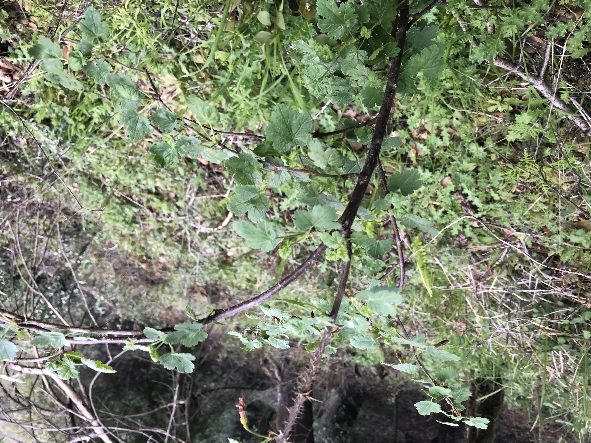
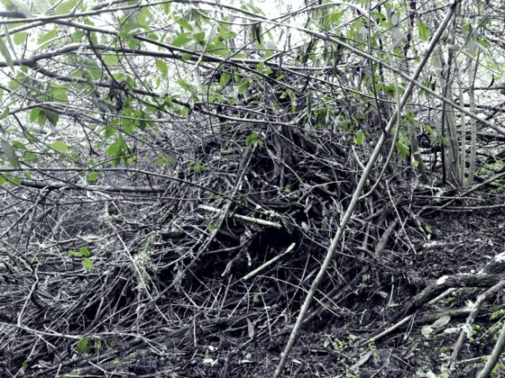
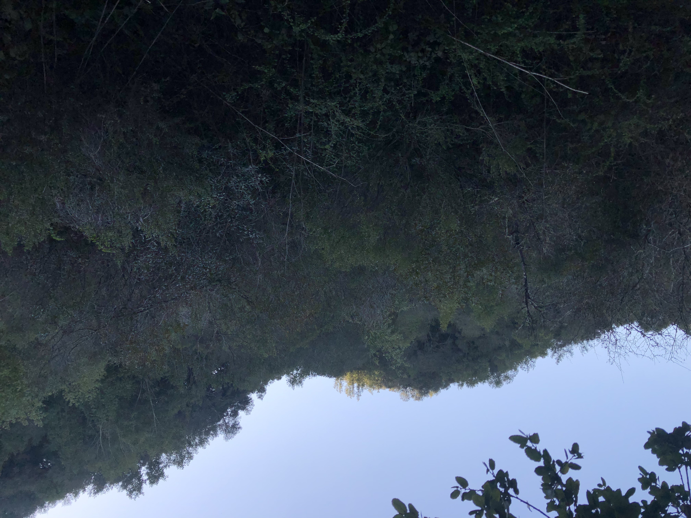

Backyard Hike 260321
After being stuck inside for a while, I decided to do some off-trail hiking near my house. I found some turkeys, a bone, and lots of nature.

Though you can barely see it in this photo, there was in fact a large group of turkeys. they did eventually wander away from me, but they seemed remarkably calm of me invading their space. I did try to move as quietly as possible.

I found this bone near where I saw those turkeys, and though it is almost certainly a deer bone, it's still a little disconcerting.
This was a view back up the hill I had climbed down. The underbrush shown here is pretty thick, that's for most of the hike I managed to stay on relatively clear deer trails.
An uninvitingly thorny plant which may be a prickleberry bush. I did not eat any of it to find out.

Just a mossy rock.
I'm really not sure what made this pile of sticks, as I was deep into some underbrush, and I doubt anyone else would have gone there to assemble it. It could have been the remnants of a tree, but I didn't actually see any tall trees nearby. This is still a mystery

Another pile of sticks, but I found this one on top of the underbrush, so it is likely some form of bird nest. It might be a raptor's nest, but I'm not sure.

The last stretch of underbrush I had to get through was especially dense, and though I was certainly being a bit over dramatic in this photo, I was actually crawling to get through by this point
A view back on the hill I hiked down. It seemed like a lot longer when I was in it...
Incoming: hiking